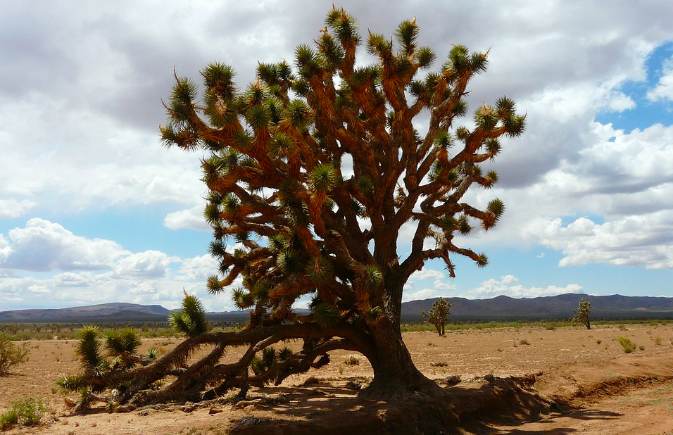
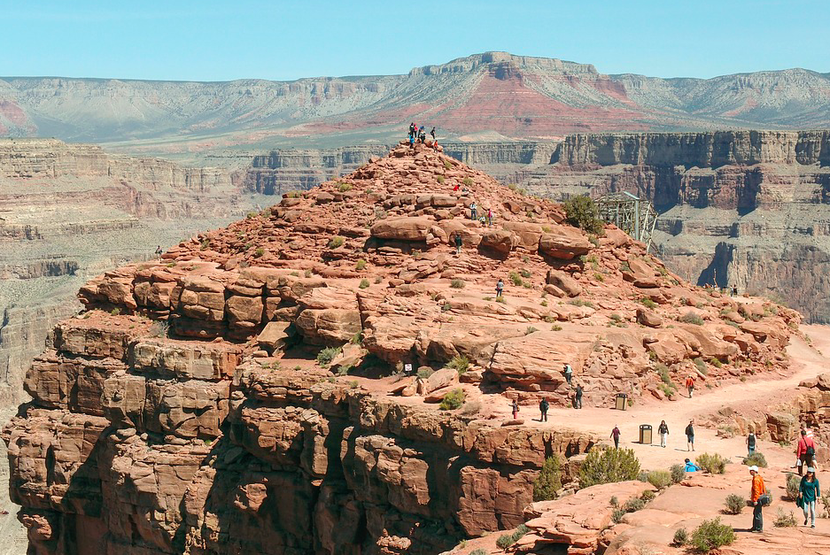
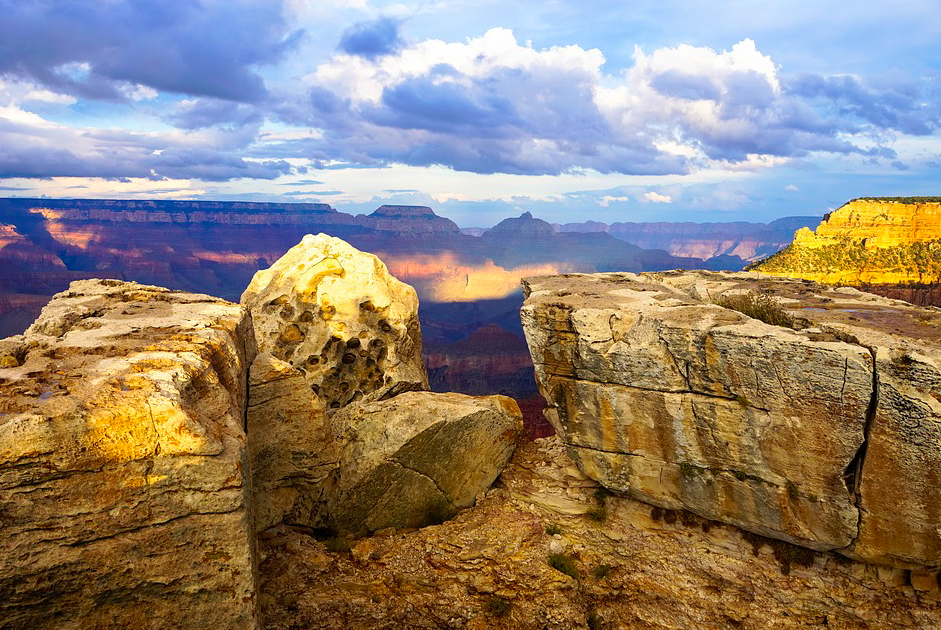

Национальный Парк Гранд Каньон — один из самых красивых, природных парков Северной Америки, он расположен всего лишь в двух часах езды на автомобиле от города Лас-Вегас. Именно по этой причине однодневная экскурсия в Гранд Каньон из Лас-Вегаса является самой популярной экскурсией у гостей этого города. В том случае, если Вы находитесь в Лас-Вегасе и уже успели познакомиться со всеми достопримечательностями Лас-Вегаса — экскурсия в Гранд Каньон из Лас-Вегаса на русском языке, будет правильным решением. Вас ждет удивительная красота одного из наиболее старых природных парков нашей планеты, созданная самой природой!
Невероятная красота Гранд Каньона и окружающих его мест, известна далеко за пределами Северной Америки — ежегодно этот Национальный парк США посещают миллионы туристов как из стран Американского континента, так и с других концов планеты.
Название каньона, переводящееся на русский язык как «Большой Каньон» совершенно соответствует его сути — он действительно является одной из самых больших трещин нашей планеты. Экскурсия в Гранд Каньон из Лас-Вегаса на русском языке познакомит Вас с этим потрясающим природным парком. Поверьте, ни один человек не сможет описать то, что Вам предстоит увидеть!
Ваша Экскурсия в Гранд Каньон из Лас-Вегаса пройдет по самым красивым местам Западной Части Большого Каньона! Западная часть каньона расположена гораздо ближе к Лас-Вегасу, нежели его восточная оконечность, за счет чего, мы с Вами сэкономим время на проезде в авто и успеем посмотреть больше природных красот.
Ландшафты этих место просто захватывают дух, от осознания того, что все то что мы видим начало формироваться на планете Земля более 70 миллионов лет назад, когда колорадское природное плато было вытолкнуто на несколько километров вверх и огромная расщелина стала заполняться водами местных рек.
Процесс углубления Гранд Каньона происходит по сей день и будет происходить еще десятки миллионов лет в будущем! Другие поражающие воображение факты этого уникального природного явления русскоязычный гид в Лас-Вегасе расскажет Вам во время экскурсии по западной части Гранд Каньона.
Ваша индивидуальная экскурсия в Гранд Каньон из Лас-Вегаса на русском языке начнется рано утром. Профессиональный, русскоязычный гид в Лас-Вегасе встретит Вас в лобби отеля, откуда Вы и направитесь на знакомство с одним из самых красивых природных явлений как США так и мира!
Кроме того, друзья, чтобы разнообразить автомобильное путешествие, и сделать его менее утомительным, наша экскурсия в Гранд Каньон из Лас-Вегаса на русском языке имеет несколько приятных туристических бонусов — дополнений:
По пути из Лас-Вегаса на Гранд Каньон, мы с Вами сделаем остановку в одном из самых живописных мест пустыни Мохаве — рощи уникальных деревьев Джошуа. Вы на некоторое время перенесетесь в настоящий, американский вестерн, почувствовав себя в роли актеров о диком западе!
На обратном пути Вы посетите Дамбу Гувера — поразительное инженерное, гидро-сооружение, являющееся второй плотиной по размерам в Соединенных Штатах. Многие гости Лас-Вегаса намеренно посещают с туристическими экскурсиями это известное место, расположенное на границе двух американских штатов — Невада и Аризона.
Плотина Гувера была возведена в первой половине тридцатых годов в популярном, американском архитектурном стиле тех лет — Арт Деко. На момент своего строительства проект плотины был одним из самых сложных инженерных сооружений тех лет. Ваш русскоязычный гид, в процессе экскурсии, расскажет огромное количество поразительных фактов строительства и эксплуатации этого инженерного чуда.
Проезд по автосерпантину через пустыню Мохаве, названную так в честь одного из крупных индейских племен, населяющих эти места тысячи лет назад. Мохаве является одним из самых засушливых, но так же и одним из самых красивейших мест нашей планеты;
Посещение уникальной рощи реликтовых деревьев Джошуа — разновидности коротколистоой юкки. Роща сегодня является излюбленным туристическим местом, но изначально она была создана для того, чтобы не потерять эту разновидность растения, так как в середине 20 века она была близка к полному исчезновению;
Посещение настоящей, индейской резервации, сохранившейся в первозданном виде до наших дней (вход $50/человек оплачивается отдельно). Трудно представить что-либо более экзотичное! Вас ждет встреча с людьми, которые вдали от цивилизации, ведут традиционный образ жизни своих предков, на протяжении многих тысяч лет. Вы познакомитесь с их жильем, обычаями и ремеслом;
Посещение западной части Гранд Каньона — одного из самых удивительных, природных творений нашей планеты! Увиденное здесь поразит воображение даже видавшего виды путешественника! Вам предстоит пешеходная прогулка по самой кромке глубочайшего ущелья на Земле! Фотографии природных красот, сделаные здесь останутся долгим напоминанием об одном из самых необычных Ваших путешествий;
При желании и за отдельную оплату возможна короткая 20-ти минутная вертолетная экскурсия с посадкой в ущелье, на берег реки Колорадо, протекающей по дну каньона. Так же, возможна прогулка на лодке по бушующей реке, в сопровождении индейца племени Уалопай, населяющего эти места;
На обратном пути, при возвращении из Каньона в Лас-Вегас, Вы посетите плотину Гувера, одно из самых грандиозных гидротехнических сооружений прошлого столетия, воздвигнутого на водах реки Колорадо и образовавшего озеро Мид;
Друзья, отдельно хочется отметить, что наш гид в Лас-Вегасе является профессиональным фотографом, а это значит, что Ваша экскурсия в Гранд Каньон из Лас-Вегаса надолго останется в памяти и фотографии с нее будут напоминать об этом незабываемом путешествии!
Пожалуйста, бронируйте дату экскурсии из Лас-Вегаса в Гранд Каньон заранее, так как чем ближе планируемая дата экскурсии, тем меньше вероятность того, что нужный день у гида в графике будет свободен.